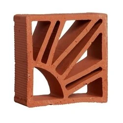

Cobogó Cerâmico Elemento Sol
Descrição do Produto
O Cobogó Cerâmico Elemento Sol é uma peça versátil que une funcionalidade e estética. Permite a passagem de luz e ventilação, criando efeitos visuais interessantes em fachadas e divisórias internas. Seu design inspirado no sol adiciona um toque regional e charmoso.
Detalhes Técnicos
- Código: CCE-006
- Dimensões por Peça: 30cm x 30cm x 8cm (Largura x Altura x Profundidade)
- Material: Cerâmica natural ou esmaltada
- Acabamento: Natural ou diversas cores (esmaltado)
- Indicação de Uso: Criação de divisórias vazadas, elementos decorativos em fachadas, muros.
- Peso por Peça: Aproximadamente 3kg
- Unidade de Venda: Peça